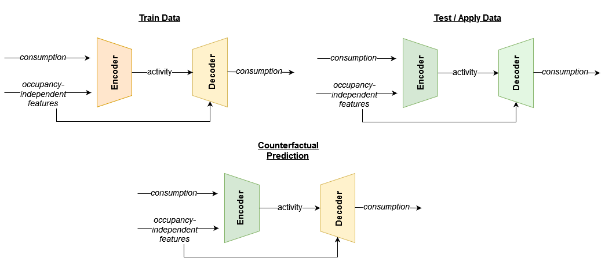

Estimation of activity levels: Part I
Contents
4.1. Estimation of activity levels: Part I#
This section explains how activity levels are estimated and how they are subsequently used.
%load_ext autoreload
%autoreload 2
import warnings
import emcee
import numpy as np
import pandas as pd
import matplotlib.patches as mpatches
import matplotlib.pyplot as plt
import matplotlib.ticker as ticker
from sklearn.preprocessing import KBinsDiscretizer, MinMaxScaler
from sklearn.utils.validation import column_or_1d
from tabulate import tabulate
from tsmoothie.smoother import KalmanSmoother
from eensight.methods.prediction.activity import (
estimate_activity,
estimate_activity_markov,
extract_activity
)
from eensight.methods.prediction.common import train_boost
from eensight.methods.prediction.metrics import cvrmse, nmbe
from eensight.utils import load_catalog
plt.style.use("bmh")
%matplotlib inline
Some utility functions:
def intervals(bin_edges):
columns = []
bin_edges = bin_edges.round(1)
for i in range(0, len(bin_edges)-1):
columns.append(f">{bin_edges[i]} & <={bin_edges[i+1]}")
return columns
def sigmoid(X: pd.DataFrame, c1: float, c2: float):
return 1 / (1 + np.exp(-c1 * (X-c2)))
def rescale(X: pd.DataFrame):
scaler = MinMaxScaler()
return pd.Series(
scaler.fit_transform(
column_or_1d(X).reshape(-1, 1)
).squeeze(),
index=X.index
)
4.1.1. The b01 dataset#
The b01 dataset corresponds to the building with id=4 of the dataset provided by the EnergyDetective 2020 competition.
Start with the train data:
catalog_train = load_catalog(store_uri="../../../data", site_id="b01", namespace="train")
X_train = catalog_train.load("train.preprocessed-features")
y_train = catalog_train.load("train.preprocessed-labels")
The following plot presents the energy consumption of the selected dataset as a function of the outdoor air (dry bulb) temperature:
fig = plt.figure(figsize=(12, 3.54), dpi=96)
layout = (1, 1)
ax = plt.subplot2grid(layout, (0, 0))
ax.scatter(X_train["temperature"], y_train["consumption"], s=10)
ax.set_xlabel("temperature")
ax.set_ylabel("consumption")
4.1.2. Using a predictive model for energy consumption#
Suppose that we want to fit on the train data a predictive model for energy consumption that uses:
calendar features (as a proxy for the building’s operation schedule) and
weather features.
We already have weather features in the data,
for feature in X_train.columns:
print(feature)
temperature
dew point temperature
relative humidity
atmospheric pressure
wind speed
… so let’s add the calendar ones:
X_train["hour"] = X_train.index.hour # hour of day
X_train["day"] = X_train.index.dayofweek # day of week
X_train["week"] = X_train.index.isocalendar().week # week of year
Now, we can fit a predictive model.
We can use the Catboost library for gradient boosting on decision trees to build and train the predictive model. eensight provides the function eensight.methods.prediction.common.train_boost for this purpose. It needs a validation_size parameter, which is the percentage of all training data to use for identifying the optimal number of iterations for the Gradient Boosting model (so that to avoid overfitting).
model = train_boost(X_train, y_train, validation_size=0.2)
Next, we can apply the model on the test data. First, load the data:
catalog_test = load_catalog(store_uri="../../../data", site_id="b01", namespace="test")
X_test = catalog_test.load("test.preprocessed-features")
y_test = catalog_test.load("test.preprocessed-labels")
Both the train and test period consumption data are presented in the next plot:
fig = plt.figure(figsize=(12, 3.54), dpi=96)
layout = (1, 1)
ax = plt.subplot2grid(layout, (0, 0))
y_train.plot(ax=ax)
y_test.plot(ax=ax)
ax.legend(["`train` period", "`test` period"], frameon=True)
Add calendar features to the test data:
X_test["hour"] = X_test.index.hour # hour of day
X_test["day"] = X_test.index.dayofweek # day of week
X_test["week"] = X_test.index.isocalendar().week # week of year
Use the trained model to predict energy consumption:
prediction = pd.Series(model.predict(X_test), index=X_test.index).clip(lower=0)
The Coefficient of Variation of the Root Mean Squared Error CV(RMSE) is:
cvrmse(y_test, prediction)
0.236691071780723
The Normalized Mean Bias Error (NMBE) is:
nmbe(y_test, prediction)
0.051646981344470544
We will capture the CV(RMSE) and NMBE values for all the models presented in this section:
summary = {
"CV(RMSE)": {},
"NMBE": {}
}
summary["CV(RMSE)"]["Predictive model"] = cvrmse(y_test, prediction)
summary["NMBE"]["Predictive model"] = nmbe(y_test, prediction)
In addition, we want to know what is achievable (in terms of predictive accuracy) using only the calendar features. We will use this information later on when we will examine the information contained in the estimated activity feature.
For this, we will train a model using only calendar features for the train data:
X_train_cal = X_train[["hour", "day", "week"]]
model = train_boost(X_train_cal, y_train, validation_size=0.2)
… and apply it on the test data:
X_test_cal = X_test[["hour", "day", "week"]]
prediction = pd.Series(model.predict(X_test_cal), index=X_test.index).clip(lower=0)
The CV(RMSE) is:
cvrmse(y_test, prediction)
0.27685025516832096
The NMBE is:
nmbe(y_test, prediction)
0.05317594630937793
summary["CV(RMSE)"]["Predictive model w/ calendar features only"] = cvrmse(y_test, prediction)
summary["NMBE"]["Predictive model w/ calendar features only"] = nmbe(y_test, prediction)
4.1.3. Estimating activity by a Markov switching regression model#
One way to estimate activity is to assume that it is a variable that distinguishes all energy consumption observations into two (2) regimes (one regime corresponding to an occupied state and one regime to an unoccupied state). Each regime is described by a different relationship between energy consumption and the most influential occupancy-indepedent feature (temperature by default).
In particular, the underlying model is of the form:
where:
\(consumption_t\) is the energy consumption at time \(t\)
\(T_t\) is the outdoor temperature at time \(t\)
\(\epsilon_t \sim N(0, \sigma^2)\) and
\(s_t \in [0, 1]\) is the active regime at time \(t\).
The function eensight.methods.prediction.activity.estimate_activity_markov estimates activity levels as the probability of being in the regime that explains the highest energy consumption values:
act_train = estimate_activity_markov(X_train, y_train, exog="temperature")
The estimated activity levels along with the actual energy consumption for the month of January are presented in the next plot:
month = 1 # January
fig = plt.figure(figsize=(12, 3.54), dpi=96)
layout = (1, 1)
ax1 = plt.subplot2grid(layout, (0, 0))
ax2 = ax1.twinx()
y_train["consumption"].loc[y_train.index.month==month].plot(ax=ax1, color="#034e7b", alpha=0.6)
act_train.loc[act_train.index.month==month].plot(ax=ax2, color="#cc4c02", alpha=0.6)
ax1.set_ylabel("Energy consumption", color="#034e7b")
ax2.set_ylabel("Estimated activity", color="#cc4c02")
Two (2) questions arise at this point:
How well does the estimated activity levels work as a feature to predict energy consumption?
We know that we have caused data leakage because we have used energy consumption data to estimate the activity levels in the first place. So this approach is not valid for a predictive task. But, is it valid for an M&V task?
Q1: How well does the estimated activity levels work as a feature?
In eensight, by convention, there should be no difference between train and test data. If an event that alters the characteristics of the energy consumption (such as an energy retrofit) has taken place, the post-event data should be in the apply namespace.
As a result, we can exploit the fact that for similar activity levels and similar values of the occupancy-independent variables, energy consumption in train and test data should be similar. In this way, we can “predict” the energy consumption for the test data using the average energy consumption for the same activity and temperature levels in the train data.
Even more importantly, we can estimate the impact of an event by comparing the average energy consumption of the apply data to the average energy consumption for the train data with the same activity and temperature levels.
As an example, let’s isolate all train and test observations where temperature is lower than 20\(^{\circ}C\) and activity levels equal to one (1). First, estimate activity for the test data:
act_test = estimate_activity_markov(X_test, y_test, exog="temperature")
Then, select the two (2) subsets:
low_temp_periods_train = X_train[X_train["temperature"] < 20].index
y_train_selected = y_train[
y_train.index.isin(low_temp_periods_train)
& y_train.index.isin(act_train[act_train == 1].index)
]
low_temp_periods_test = X_test[X_test["temperature"] < 20].index
y_test_selected = y_test[
y_test.index.isin(low_temp_periods_test)
& y_test.index.isin(act_test[act_test == 1].index)
]
We can plot the two subsets side by side:
fig, (ax1, ax2) = plt.subplots(1, 2, sharey=True, figsize=(12, 3.54), dpi=96)
fig.subplots_adjust(wspace=0.04)
ax1.scatter(
X_train.loc[~X_train.index.isin(y_train_selected.index), "temperature"],
y_train.loc[~y_train.index.isin(y_train_selected.index), "consumption"],
s=10,
alpha=0.8
)
ax1.scatter(
X_train.loc[y_train_selected.index, "temperature"],
y_train_selected["consumption"],
s=10,
alpha=0.4,
color="#fe9929"
)
ax1.set_xlabel("temperature")
ax1.set_ylabel("consumption")
ax1.set_title("`train` data")
ax1.legend(
handles=[
mpatches.Patch(color="#fe9929", label="Selected subset"),
]
)
ax2.scatter(
X_test.loc[~X_test.index.isin(y_test_selected.index), "temperature"],
y_test.loc[~y_test.index.isin(y_test_selected.index), "consumption"],
s=10,
alpha=0.8
)
ax2.scatter(
X_test.loc[y_test_selected.index, "temperature"],
y_test_selected["consumption"],
s=10,
alpha=0.4,
color="#fe9929"
)
ax2.set_xlabel("temperature")
ax2.set_title("`test` data")
ax2.legend(
handles=[
mpatches.Patch(color="#fe9929", label="Selected subset"),
]
)
Since there has been no event that alters the energy consumption between the two periods, the distributions should be similar, and knowing the energy consumption of the train period should tell us something about the energy consumption during the test period:
fig = plt.figure(figsize=(12, 3), dpi=96)
layout = (1, 1)
ax = plt.subplot2grid(layout, (0, 0))
y_train_selected.plot.kde(ax=ax)
y_test_selected.plot.kde(ax=ax)
ax.legend(["`train` period", "`test` period"], frameon=True)
This is pretty much how a counterfactual prediction should work: find similar conditions between the two datasets (here, similar temperature and activity levels), and compare their energy consumption. To make this approach operational, we can split the train temperature into five (5) bins and calculate the average energy consumption per bin and activity level:
n_bins = 5
encoder = KBinsDiscretizer(n_bins=n_bins, encode="ordinal", strategy="uniform")
data_train = pd.concat(
[
X_train[["temperature"]],
y_train,
# make activity a binary feature for easier mapping
act_train.map(lambda x: 0 if x < 0.5 else 1).to_frame("activity")
],
axis=1
).dropna()
data_train["temperature"] = encoder.fit_transform(data_train[["temperature"]]).astype(int)
data_train = data_train.groupby(["activity", "temperature"]).mean().unstack().droplevel(0, axis=1)
data_train.columns = data_train.columns.map(
lambda x: intervals(encoder.bin_edges_.item())[x]
)
data_train
| temperature | >-7.0 & <=2.4 | >2.4 & <=11.8 | >11.8 & <=21.2 | >21.2 & <=30.6 | >30.6 & <=40.0 |
|---|---|---|---|---|---|
| activity | |||||
| 0 | 149.25767 | 142.914250 | 125.647583 | 172.135394 | 262.607396 |
| 1 | 373.19614 | 374.861029 | 289.907589 | 392.749730 | 588.314565 |
Then, map activity levels and temperature bins between the train and the test data:
X_test_act = pd.concat(
[
X_test[["temperature"]],
act_test.map(lambda x: 0 if x < 0.5 else 1).to_frame("activity")
],
axis=1
).dropna()
X_test_act["temperature"] = encoder.transform(X_test_act[["temperature"]]).astype(int)
X_test_act["temperature"] = X_test_act["temperature"].map(
lambda x: intervals(encoder.bin_edges_.item())[x]
)
prediction = (
X_test_act.apply(lambda row: data_train.loc[row["activity"], row["temperature"]], axis=1)
.reindex(X_test.index)
.fillna(method="ffill")
.fillna(method="bfill")
)
The actual and the predicted energy consumption are presented in the next plot:
fig = plt.figure(figsize=(12, 3.54), dpi=96)
layout = (1, 1)
ax = plt.subplot2grid(layout, (0, 0))
y_test["consumption"].plot(ax=ax, alpha=0.6)
prediction.plot(ax=ax, alpha=0.4)
ax.set_ylabel("Energy consumption")
ax.set_xlabel("")
ax.legend(["Actual energy consumption", "Predicted energy consumption"], frameon=True)
The CV(RMSE) is:
cvrmse(y_test, prediction)
0.25303261894923357
The NMBE is:
nmbe(y_test, prediction)
0.03435777844009265
summary["CV(RMSE)"]["Binning model"] = cvrmse(y_test, prediction)
summary["NMBE"]["Binning model"] = nmbe(y_test, prediction)
What we just did is equivalent to adding the estimated activity levels to the weather-related features of the train data, dropping the calendar features (hour of day, day of week, week of year) since we are replacing them with the activity estimation, and learning to predict energy consumption:
X_train_act = pd.concat(
[
X_train.drop(["hour", "day", "week"], axis=1),
act_train.to_frame("activity")
],
axis=1
)
model = train_boost(X_train_act, y_train, validation_size=0.2)
We can apply the model that was trained with train data on the test data:
X_test_act = pd.concat(
[
X_test.drop(["hour", "day", "week"], axis=1),
act_test.to_frame("activity")
],
axis=1
)
# apply the model that was trained with `train` data
prediction = pd.Series(
model.predict(X_test_act), index=X_test.index
).clip(lower=0)
The actual and the predicted energy consumption are presented in the next plot:
fig = plt.figure(figsize=(12, 3.54), dpi=96)
layout = (1, 1)
ax = plt.subplot2grid(layout, (0, 0))
y_test["consumption"].plot(ax=ax, alpha=0.6)
prediction.plot(ax=ax, alpha=0.4)
ax.set_ylabel("Energy consumption")
ax.set_xlabel("")
ax.legend(["Actual energy consumption", "Predicted energy consumption"], frameon=True)
The CV(RMSE) is now:
cvrmse(y_test, prediction)
0.2200642085109248
And the NMBE:
nmbe(y_test, prediction)
0.03881894580152023
Although eensight does not use deep learning techniques, the best way to describe the last model is as a combination of autoencoders. One autoencoder model is developed using train data: it uses energy consumption data to identify activity levels conditioned on the occupancy-independent features (encoder) and, then, uses the activity levels and the occupancy-independent features to reconstruct the energy consumption (decoder). The other autoencoder model is developed similarly using test or apply data.
The M&V model is derived by combining the activity estimation of the test or apply data (second encoder) with the energy consumption model that was trained using the train data (first decoder). This concept is summarized in the following diagram:

summary["CV(RMSE)"]["Autoencoding model w/ markov activity"] = cvrmse(y_test, prediction)
summary["NMBE"]["Autoencoding model w/ markov activity"] = nmbe(y_test, prediction)
We will also fit and evaluate a predictive model that uses a binary version of the estimated activity levels:
X_train_act = pd.concat(
[
X_train.drop(["hour", "day", "week"], axis=1),
act_train.map(lambda x: 0 if x < 0.5 else 1).to_frame("activity")
],
axis=1
)
model = train_boost(X_train_act, y_train, validation_size=0.2)
X_test_act = pd.concat(
[
X_test.drop(["hour", "day", "week"], axis=1),
act_test.map(lambda x: 0 if x < 0.5 else 1).to_frame("activity")
],
axis=1
)
# apply the model that was trained with `train` data
prediction = pd.Series(
model.predict(X_test_act), index=X_test.index
).clip(lower=0)
cvrmse(y_test, prediction)
0.23237372671484366
summary["CV(RMSE)"]["Autoencoding model w/ binary activity"] = cvrmse(y_test, prediction)
summary["NMBE"]["Autoencoding model w/ binary activity"] = nmbe(y_test, prediction)
Q2: Is this a valid approach for M&V?
If we treat M&V as a pure prediction task, it is not, and this is because we use test consumption data to estimate activity levels in the first place. However, M&V is not a prediction task, it is an impact assessment task. The autoencoding model above is a valid counterfactual model that follows this general template:
When used on train data
Estimate activity levels (i.e. estimate the value of a mapping variable)
Train a model that predicts consumption given activity levels and occupancy-independent features
When used on test or apply data
Estimate activity levels (i.e. adjust a mapping variable based on the available data)
Apply the model to predict the consumption that corresponds to similar activity levels and occupancy-independent features’ values in the
traindata.
Here, we use this approach for test data, but it is mainly meant to be used for data before (train) and after (apply) an energy retrofit. Since we will start collecting apply data during the reporting period, we can estimate activity levels and map their values back to the energy consumption of the train data.
Since the autoencoding models are not valid models for prediction, we don’t evaluate the CV(RMSE) to see how much it was improved. Instead, we look at the CV(RMSE) to ensure that it is close to the results from the monolithic model, which is a valid model for prediction tasks. This will assure us that the proposed approach does not overfit and, as a result, we can trust it when applied on post-retrofit data as well.
4.1.4. Allowing activity estimation to overfit the data#
eensight provides the eensight.methods.prediction.activity.extract_activity function as a way to remove from the energy consumption data the impact of the features that are independent of the building’s operation (such as outdoor temperature).
The extract_activity function employs a fast, heuristic approach that performs two (2) quantile regressions of the consumption data as function of the occupancy-independent features: one regression at the 0.99 quantile and one at the 0.01 one. Then, all observations are normalized to the [0, 1] interval using the range of the corresponding 0.99-quantile and 0.01-quantile predictions.
for feature in X_train.columns:
print(feature)
temperature
dew point temperature
relative humidity
atmospheric pressure
wind speed
hour
day
week
Drop the calendar features and use all weather features as occupancy-independent features:
X_train = X_train.drop(["hour", "day", "week"], axis=1)
X_test = X_test.drop(["hour", "day", "week"], axis=1)
non_occ_features = [
"temperature",
"dew point temperature",
"relative humidity",
"atmospheric pressure",
"wind speed",
]
act_train = extract_activity(X_train, y_train, non_occ_features=non_occ_features)
The estimated activity levels are presented in the following plot:
plot_data = pd.concat(
[
X_train[["temperature"]],
y_train,
act_train.to_frame("activity")
],
axis=1
)
plot_data = plot_data.sort_values(by="temperature")
fig = plt.figure(figsize=(12, 3.54), dpi=96)
layout = (1, 1)
ax = plt.subplot2grid(layout, (0, 0))
plot_data.plot.scatter("temperature", "consumption", c="activity", colormap='viridis', s=10, ax=ax)
Note that the extract_activity function significantly overfits the data. In other words, it assumes that the activity feature explains all the variation of the energy consumption that cannot be explained by the occupancy-independent features.
One way to verify that the extract_activity function does indeed overfit the data is to use its result as a feature for predicting energy consumption. For this, we can add the estimated activity to the weather features, and train a new predictive model.
X_train_act = pd.concat(
[
X_train,
act_train.to_frame("activity")
],
axis=1
)
model, scores = train_boost(X_train_act, y_train, validation_size=0.2, return_scores=True)
The scores variable is a dictionary with the regression metrics for the data used for training (learn key) and for validation (validation key):
scores
{ 'learn': {'RMSE': 2.0079791342431044, 'CVRMSE': 0.010091042459968107}, 'validation': {'RMSE': 1.9624404160731104, 'CVRMSE': 0.011481690145716752} }
The low CV(RMSE) values are a telltale sign that overfitting is at play.
We will apply extract_activity on the test data too:
act_test = extract_activity(X_test, y_test, non_occ_features=non_occ_features)
And use the trained model to predict on the test data:
X_test_act = pd.concat(
[
X_test,
act_test.to_frame("activity")
],
axis=1
)
# apply the model that was trained with `train` data
prediction = pd.Series(
model.predict(X_test_act), index=X_test.index
).clip(lower=0)
cvrmse(y_test, prediction)
0.07502353241243263
Any approach to estimating the
activityfeature that leads to a prediction on thetestdata with a CV(RMSE) significantly lower than the value we achieved with the pure predictive model (~ 23%) should be suspected for overfitting the data.
summary["CV(RMSE)"]["Autoencoding model w/ overfitting activity"] = cvrmse(y_test, prediction)
summary["NMBE"]["Autoencoding model w/ overfitting activity"] = nmbe(y_test, prediction)
4.1.5. Correcting the activity estimation#
We can argue that the most useful estimation of the activity feature is somewhere between:
the binary activity (which may underfit because it removes information for intermediate levels of activity) and
the one returned by the
extract_activity(which significantly overfits).
To move between these two extremes, we can impose a sigmoid transformation on the estimated activity:
The idea behind the sigmoid transformation is that many low values of activity may in fact be zero activity plus noise, many high values of activity may in fact be full activity plus noise, and values in between may represent different intermediate conditions. The different shapes of the sigmoid transformation are presented in the next plot:
labels = []
c1_values = [5, 10, 20, 30, 50, 100]
c2 = 0.5
fig = plt.figure(figsize=(12, 3), dpi=96)
layout = (1, 1)
ax = plt.subplot2grid(layout, (0, 0))
for c1 in c1_values:
act_train_trimmed = act_train.pipe(sigmoid, c1, c2).pipe(rescale)
ax.scatter(act_train, act_train_trimmed, s=2)
labels.append(f"c1 = {c1}, c2 = 0.5")
ax.set_xlabel("Original activity levels")
ax.set_ylabel("Transformed activity levels")
ax.legend(labels, frameon=True)
To understand better how we could optimally parameterize the sigmoid transformation, we can use the transformed activity levels as features, fit a predictive model for energy consumption given the transformed activity and weather data in the train period, and evaluate it using the transformed activity and the weather data of the test period.
c1_values = [5, 10, 20, 25, 30, 40, 50, 100]
c2 = 0.5
accuracy = []
for c1 in c1_values:
# we round up and down to remove small variations
# (values at almost one or values that are almost
# zero) that may be picked up by a predicitive model
act_train_trimmed = (
act_train
.pipe(sigmoid, c1, c2)
.pipe(rescale)
.map(lambda x: 0 if x < 0.1 else 1 if x > 0.9 else x)
)
X_train_act = pd.concat(
[
X_train,
act_train_trimmed.to_frame("activity")
],
axis=1
)
model = train_boost(X_train_act, y_train)
act_test_trimmed = (
act_test
.pipe(sigmoid, c1, c2)
.pipe(rescale)
.map(lambda x: 0 if x < 0.1 else 1 if x > 0.9 else x)
)
X_test_act = pd.concat(
[
X_test,
act_test_trimmed.to_frame("activity")
],
axis=1
)
pred = pd.Series(model.predict(X_test_act), index=y_test.index)
accuracy.append(cvrmse(y_test, pred))
The next plot shows what we should have been expecting: the larger the correction, the higher the CV(RMSE).
fig = plt.figure(figsize=(12, 3), dpi=96)
layout = (1, 1)
ax = plt.subplot2grid(layout, (0, 0))
pd.Series(accuracy, index=c1_values).map(lambda x: 100*x).plot(ax=ax, style="-o")
ax.set_xlabel("Value of c1")
ax.set_ylabel("CV(RMSE) (%)")
But, how do we know which parameters to choose for the sigmoid transformation? In other words,
How do we know which accuracy levels are low because of overfitting and which are high due to over-correction?
The approach that eensight adopts is based on the idea that the optimal c1 value is the one that minimizes the difference between the CV(RMSE) of an autoencoding model when applied on the train data and the CV(RMSE) of the same model when applied to a denoised/smoothed version of the train energy consumption data. Since the extract_activity function overfits the energy consumption data, this difference is a good enough proxy for the degree of overfitting.
The denoised version of the train energy consumption data is calculated as follows:
smoother = KalmanSmoother(component="level", component_noise={"level": 0.1})
smoother = smoother.smooth(y_train)
y_train_dn = pd.Series(smoother.smooth_data[0], index=y_train.index)
y_train_dn.loc[y_train[y_train["consumption"] <= 1e-05].index] = 0
The actual and the denoised energy consumption for the month of January are presented in the next plot:
month = 1 # January
fig = plt.figure(figsize=(12, 3), dpi=96)
layout = (1, 1)
ax = plt.subplot2grid(layout, (0, 0))
y_train["consumption"].loc[y_train.index.month==month].plot(
ax=ax, color="#034e7b", alpha=0.6
)
y_train_dn.loc[y_train_dn.index.month==month].plot(
ax=ax, color="#cc4c02", alpha=0.6
)
ax.legend(["Energy consumption", "Denoised energy consumption"], frameon=True)
Next, we will calculate our overfitting proxy for different values of the c1 parameter (keeping c2 constant):
c1_values = [5, 10, 20, 25, 30, 35, 40, 45, 50, 55, 60]
c2 = 0.5
results = []
for c1 in c1_values:
act_train_trimmed = (
act_train
.pipe(sigmoid, c1, c2)
.pipe(rescale)
.map(lambda x: 0 if x < 0.1 else 1 if x > 0.9 else x)
)
X_train_act = pd.concat(
[
X_train,
act_train_trimmed.to_frame("activity")
],
axis=1
)
model = train_boost(X_train_act, y_train)
# apply the model on the smoothed data
prediction = pd.Series(model.predict(X_train_act), index=y_train.index)
results.append(cvrmse(y_train_dn, prediction) - cvrmse(y_train, prediction))
results = pd.Series(results, index=c1_values)
The evolution of the overfitting proxy is presented below:
fig = plt.figure(figsize=(12, 3), dpi=96)
layout = (1, 1)
ax = plt.subplot2grid(layout, (0, 0))
results.map(lambda x: 100*x).plot(ax=ax, style="-o")
ax.set_xlabel("Value of c1")
ax.set_ylabel("Difference in CV(RMSE) (%)")
In order to find a compromise between reducing the difference in the CV(RMSE) values and the degree of correction (value of c1), we seek the maximum of the following vector:
opt = ((results - results.iloc[0]) / results.iloc[0]).abs() - 0.005*results.index
The first term of the formula above rewards reductions in the overfitting proxy compared to its initial value, and the second term penalizes for the value of the c1 parameter. The evolution of both the overfitting proxy and the optimization objective are presented below:
fig = plt.figure(figsize=(12, 3), dpi=96)
layout = (1, 1)
ax1 = plt.subplot2grid(layout, (0, 0))
ax2 = ax1.twinx()
results.map(lambda x: 100*x).plot(ax=ax1, style="-o", color="#034e7b")
opt.plot(ax=ax2, style="-o", color="#cc4c02")
ax1.set_xlabel("Value of c1")
ax1.set_ylabel("Difference in CVRMSE (%)", color="#034e7b")
ax2.set_ylabel("Optimization objective", color="#cc4c02")
The function eensight.methods.prediction.activity.estimate_activity optimizes the values for the parameters c1 and c2.
c2 is selected based on the objective that the output of the extract_activity function should approximate the shape implied by the results of the estimate_activity_markov function.
First, we will estimate the activity levels for the train and the test data using the estimate_activity function:
act_train, best_params = estimate_activity(
X_train,
y_train,
non_occ_features=non_occ_features,
exog="temperature",
return_params=True
)
best_params
{'c1': 23.0, 'c2': 0.4976250842770019}
act_test, best_params = estimate_activity(
X_test,
y_test,
non_occ_features=non_occ_features,
exog="temperature",
return_params=True
)
best_params
{'c1': 24.0, 'c2': 0.5050037082333166}
Then, use the train activity levels as features for an energy consumption model,
X_train_act = pd.concat(
[
X_train,
act_train.to_frame("activity")
],
axis=1
)
… fit the predictive model for energy consumption given the estimated activity and the weather data in the train period,
model = train_boost(X_train_act, y_train)
… and evaluate the model using the estimated activity levels and the weather data of the test period:
X_test_act = pd.concat(
[
X_test,
act_test.to_frame("activity")
],
axis=1
)
prediction = pd.Series(
model.predict(X_test_act), index=X_test.index
).clip(lower=0)
The CV(RMSE) is now:
cvrmse(y_test, prediction)
0.22064467499835222
And the NMBE is:
nmbe(y_test, prediction)
0.04838481617334579
summary["CV(RMSE)"]["Autoencoding model w/ corrected activity"] = cvrmse(y_test, prediction)
summary["NMBE"]["Autoencoding model w/ corrected activity"] = nmbe(y_test, prediction)
The estimated activity levels, along with the actual energy consumption for the train period and the month of January are presented in the next plot:
month = 1 # January
fig = plt.figure(figsize=(12, 3.54), dpi=96)
layout = (1, 1)
ax1 = plt.subplot2grid(layout, (0, 0))
ax2 = ax1.twinx()
y_train["consumption"].loc[y_train.index.month==month].plot(ax=ax1, color="#034e7b", alpha=0.6)
act_train.loc[act_train.index.month==month].plot(ax=ax2, color="#cc4c02", alpha=0.6)
ax1.set_ylabel("Energy consumption", color="#034e7b")
ax2.set_ylabel("Estimated activity levels", color="#cc4c02")
There is an additional aspect to verify. For the activity feature to be useful in the autoencoding scheme, it must be hard to reconstruct the energy consumption when given activity alone, but easy if activity is provided along with the features that are independent of the building’s operation and were used for activity level estimation.
We can verify this by dropping the additional features and using only the estimated activity to predict energy consumption. Let’s re-train a model using only the estimated activity levels for the train period.
model = train_boost(act_train.to_frame("activity"), y_train, validation_size=0.2)
And evaluate the model on the test data:
prediction = pd.Series(
model.predict(act_test.to_frame("activity")),
index=X_test.index
).clip(lower=0)
cvrmse(y_test, prediction)
0.339086268512483
summary["CV(RMSE)"]["Autoencoding model w/ activity only"] = cvrmse(y_test, prediction)
summary["NMBE"]["Autoencoding model w/ activity only"] = nmbe(y_test, prediction)
The difference is ~50%, which indicates that it is indeed not easy to reconstruct the energy consumption when given activity alone.
The summary of the CV(RMSE) values of all the models explored in this section is presented in the next plot:
summary = pd.DataFrame.from_dict(summary)
fig = plt.figure(figsize=(8, 3), dpi=96)
layout = (1, 1)
ax = plt.subplot2grid(layout, (0, 0))
summary1 = summary[["CV(RMSE)"]].sort_values(by="CV(RMSE)")
summary2 = summary1.copy()
summary1.loc["Monolithic model"] = 0
summary2.loc[[name for name in summary.index if name != "Predictive model"]] = 0
summary1.plot.barh(ax=ax, color="#0570b0")
summary2.plot.barh(ax=ax, color="#fd8d3c", legend=False)
There are two (2) conclusions to be made from the plot above:
When dealing with buildings where energy consumption is easy to predict using the outdoor temperature and calendar features, the autoencoding model gives results that are similar to the monolithic model.
The estimated activity feature does not contain more information than the calendar features that it replaces.
These conclusions should mitigate concerns for potential overfitting due to data leakage, which can arise when dealing with buildings where calendar features are not very predictive of energy consumption, but the autoencoding approach can still provide acceptable results (because it directly estimates activity levels instead of predicting them).
Finally, the summary of the NMBE values of all the models is presented in the next plot:
fig = plt.figure(figsize=(8, 3), dpi=96)
layout = (1, 1)
ax = plt.subplot2grid(layout, (0, 0))
summary1 = summary[["NMBE"]].sort_values(by="NMBE")
summary2 = summary1.copy()
summary1.loc["Monolithic model"] = 0
summary2.loc[[name for name in summary.index if name != "Predictive model"]] = 0
summary1.plot.barh(ax=ax, color="#0570b0")
summary2.plot.barh(ax=ax, color="#fd8d3c", legend=False)
4.1.6. Disaggregating predictions#
eensight offers a way to split an energy consumption prediction into temperature-dependent and temperature-independent components. For this, it uses the model’s predictions to estimate some first-principle parameters of the underlying building.
In particular, it assumes that the energy consumption of the building is governed by the following system of equations:
if activity > 0 :
else (activity = 0) :
for all values of activity :
where:
\(A\) : Area of building exposed to outdoors \((m^2)\)
\(U\) : U value of envelope \((W/(m^2*K))\)
\(T_{out}\) : Outdoor air temperature \((K)\)
\(T_{sp}^{coo}\) : Setpoint indoor air temperature for cooling \((K)\)
\(T_{sp}^{hea}\) : Setpoint indoor air temperature for heating \((K)\)
\(T_{sb}^{coo}\) : Setback indoor air temperature for cooling \((K)\)
\(T_{sb}^{hea}\) : Setback indoor air temperature for heating \((K)\)
\(\eta\) : Heat recovery efficiency (%)
\(c_{p}\) : Specific heat capacity of air \((J/(kg*K))\)
\(\rho\) : Density of air \((kg/m^3)\)
\(ACH\) : Air changes per hour
\(V\) : Air volume of building \((m^3)\)
\(\alpha, \beta\) : Parameters for a linear relationship between activity levels and plug load
\(Q_{con}\) : Air conditioning load \((W)\)
\(Q_{ven}\) : Ventilation load \((W)\)
\(Q_{plug}\) : Plug load \((W)\)
The estimation of the building’s parameters is be done using Markov chain Monte Carlo, so we need to define the priors for the parameters:
The relevant functionality is provided by the function eensight.methods.prediction.baseline.explain_predicition.
First, explain_predicition defines a log-prior function:
def log_prior(theta, y):
u_value, T_sp_coo, T_sp_hea, T_sb_coo, T_sb_hea, eta, ach, alpha, beta = theta
if (
(0.5 < u_value < 5)
and (273.15 + 24 < T_sp_coo < 273.15 + 27)
and (273.15 + 20 < T_sp_hea < 273.15 + 24)
and (273.15 + 24 < T_sb_coo < 273.15 + 35)
and (273.15 + 5 < T_sb_hea < 273.15 + 20)
and (0 < eta < 1)
and (0.3 < ach < 5)
and (0 < alpha < y.max() - y.min())
and (0 < beta < y.min())
):
return 0.0
return -np.inf
Next, it defines a forward model:
def forward_model(theta, temperature, activity, A, V, cp, rho):
u_value, T_sp_coo, T_sp_hea, T_sb_coo, T_sb_hea, eta, ach, alpha, beta = theta
# air conditioning load when activity is positive
cond_load_on = (
A
* u_value
* np.maximum(temperature - T_sp_coo, T_sp_hea - temperature)
.clip(lower=0)
.pipe(lambda x: x.mask(activity <= 1e-05, 0))
)
# ventilation load
ven_load = (
(1 / 3600)
* (1 - eta)
* cp
* rho
* ach
* V
* np.maximum(temperature - T_sp_coo, T_sp_hea - temperature)
.clip(lower=0)
.pipe(lambda x: x.mask(activity <= 1e-05, 0))
)
# air conditioning load when activity is zero
cond_load_off = (
A
* u_value
* np.maximum(temperature - T_sb_coo, T_sb_hea - temperature)
.clip(lower=0)
.pipe(lambda x: x.mask(activity > 1e-05, 0))
)
# plug load
plug_load = alpha * activity + beta
return cond_load_on, ven_load, cond_load_off, plug_load
Defines the log-likelihood:
def log_likelihood(theta, temperature, activity, y, A, V, cp, rho):
_, T_sp_coo, T_sp_hea, T_sb_coo, T_sb_hea, eta, _, _, _ = theta
if (
(T_sp_coo < T_sp_hea)
or (T_sb_coo < T_sb_hea)
or (T_sp_coo > T_sb_coo)
or (T_sp_hea < T_sb_hea)
or (eta > 1)
or (eta < 0)
):
return -np.inf
cond_load_on, ven_load, cond_load_off, plug_load = forward_model(
theta, temperature, activity, A, V, cp, rho
)
total_load = cond_load_on + ven_load + cond_load_off + plug_load
return -0.5 * np.sum((y - total_load) ** 2)
The full log-probability function is:
def log_probability(theta, temperature, activity, y, A, V, cp, rho):
lp = log_prior(theta, y)
if not np.isfinite(lp):
return -np.inf
return lp + log_likelihood(theta, temperature, activity, y, A, V, cp, rho)
The function to run the MCMC estimations is defined as:
def run_mcmc(X, y, *, A, V, cp, rho):
nwalkers = 100
ndim = 9 # number of parameters to estimate
temperature = X["temperature"] + 273.15
activity = X["activity"]
sampler = emcee.EnsembleSampler(
nwalkers, ndim, log_probability, args=(temperature, activity, y, A, V, cp, rho)
)
# initial values
pos = np.array(
[
1, # u_value
273.15 + 25, # T_sp_coo
273.15 + 20, # T_sp_hea
273.15 + 35, # T_sb_coo
273.15 + 10, # T_sb_hea
0.5, # eta
2, # ach
y.min(), # alpha
y.min()/2 # beta
]
)
pos = np.tile(pos, (nwalkers, 1)) + np.random.randn(nwalkers, ndim)
with warnings.catch_warnings():
warnings.filterwarnings("ignore", category=RuntimeWarning)
sampler.run_mcmc(pos, 1000, progress=False)
chain = sampler.get_chain(discard=100, thin=15, flat=True)
return chain
Now, let’s estimate the parameters of the building based on the predictions of an autoencoding model that has been trained using train data and applied on test data.
Get the prediction:
X_train_act = pd.concat(
[
X_train,
act_train.to_frame("activity")
],
axis=1
)
model = train_boost(X_train_act, y_train, validation_size=0.2)
X_test_act = pd.concat(
[
X_test,
act_test.to_frame("activity")
],
axis=1
)
prediction = pd.Series(
model.predict(X_test_act), index=X_test.index
).clip(lower=0)
Estimate the building’s parameters:
X_test_act = X_test_act.dropna()
prediction = prediction.loc[X_test_act.index]
samples = run_mcmc(X_test_act, prediction, A=30, V=90, cp=1.005, rho=1.2)
The estimated values for the parameters are:
parameters = [
"u_value",
"T_sp_coo",
"T_sp_hea",
"T_sb_coo",
"T_sb_hea",
"eta",
"ach",
"alpha",
"beta"
]
theta = samples.mean(axis=0)
results = {
param: val - 273.15
if param in ["T_sp_coo", "T_sp_hea", "T_sb_coo", "T_sb_hea", ]
else val
for param, val in zip(parameters, theta)
}
table = []
for param, val in results.items():
table.append([param, round(val, 2)])
print(tabulate(table, headers=["Parameter", "Estimated value"]))
Parameter Estimated value
----------- -----------------
u_value 0.86
T_sp_coo 24.41
T_sp_hea 20.58
T_sb_coo 28.63
T_sb_hea 8.52
eta 0.51
ach 2.94
alpha 59.74
beta 50.27
We can estimate the HVAC load based on the forward model and the estimated parameters for the building:
temperature = X_test_act["temperature"] + 273.15
activity = X_test_act["activity"]
cond_load_on, ven_load, cond_load_off, plug_load = forward_model(
theta,
temperature,
activity,
30,
90,
1.005,
1.2
)
hvac_load = cond_load_on.add(cond_load_off).add(ven_load)
… and plot the HVAC load estimation along with the actual energy consumption:
fig = plt.figure(figsize=(12, 3.54), dpi=96)
layout = (1, 1)
ax = plt.subplot2grid(layout, (0, 0))
y_test["consumption"].plot(ax=ax, alpha=0.5)
hvac_load.plot(ax=ax, alpha=0.5)
ax.set_xlabel("")
ax.legend(["Actual total consumption", "Predicted HVAC consumption"], frameon=True)
And we will do the same for the predicted plug load:
fig = plt.figure(figsize=(12, 3.54), dpi=96)
layout = (1, 1)
ax = plt.subplot2grid(layout, (0, 0))
y_test["consumption"].plot(ax=ax, alpha=0.5)
plug_load.plot(ax=ax, alpha=0.5)
ax.set_xlabel("")
ax.legend(["Actual total consumption", "Predicted plug consumption"], frameon=True)
There is the final argument to support the claim that the estimated activity levels do not cause overfitting due to data leakage:
If data leakage caused overfitting, the estimated plug load would explain most of the energy consumption, and the estimated HVAC load will be minimal.
Finally, we can plot the total predicted consumption along with the actual one:
fig = plt.figure(figsize=(12, 3.54), dpi=96)
layout = (1, 1)
ax = plt.subplot2grid(layout, (0, 0))
total_predicted = hvac_load + plug_load
y_test["consumption"].plot(ax=ax, alpha=0.5)
total_predicted.plot(ax=ax, alpha=0.5)
ax.set_xlabel("")
ax.legend(["Actual total consumption", "Predicted total consumption"], frameon=True)